La méthode présenté dans l'article de SIGGRAPH permet d'obtenir une image hybride dont le sens change selon la distance de l'observateur.
La méthode consiste à combiner une image à basse fréquence avec une image à haute fréquence. L'image à basse fréquence est obtenue
en filtrant les hautes fréquence de l'image en appliquant un filtre gaussien sur elle. L'image à haute fréquence est obtenue en appliquant le filtre gaussien sur l'image,
puis, en soustrayant l'image initial avec l'image filtré. Ainsi, l'image à haute fréquence devrais être perceptible de proche et celle de basse fréquence devrais
l'être de loin.
§ 2 Einstein / Marilyn
Paramètres retenus
σ_bas (Marilyn)16
σ_haut (Einstein)8
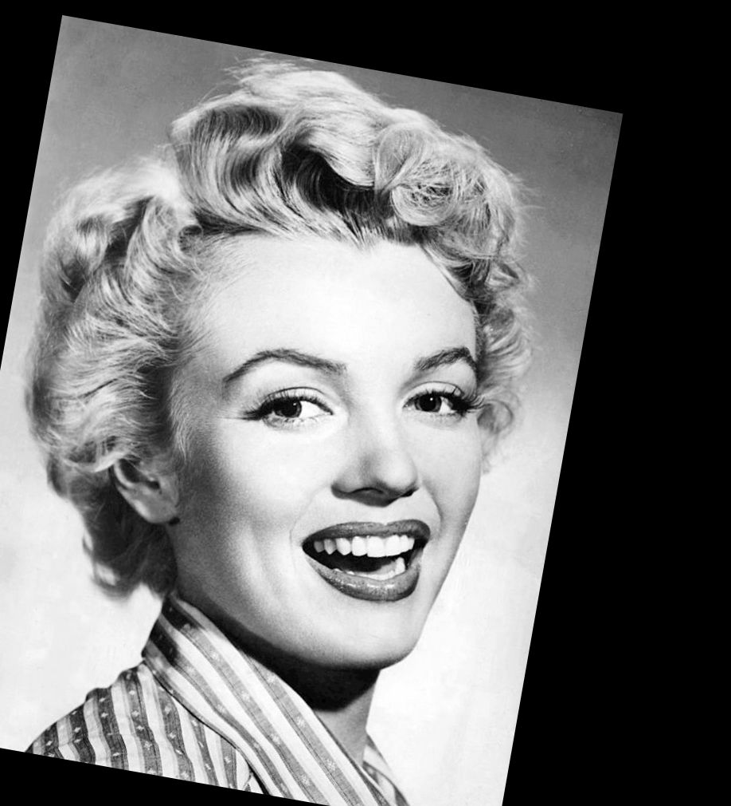
Basses fréq. — Marilyn
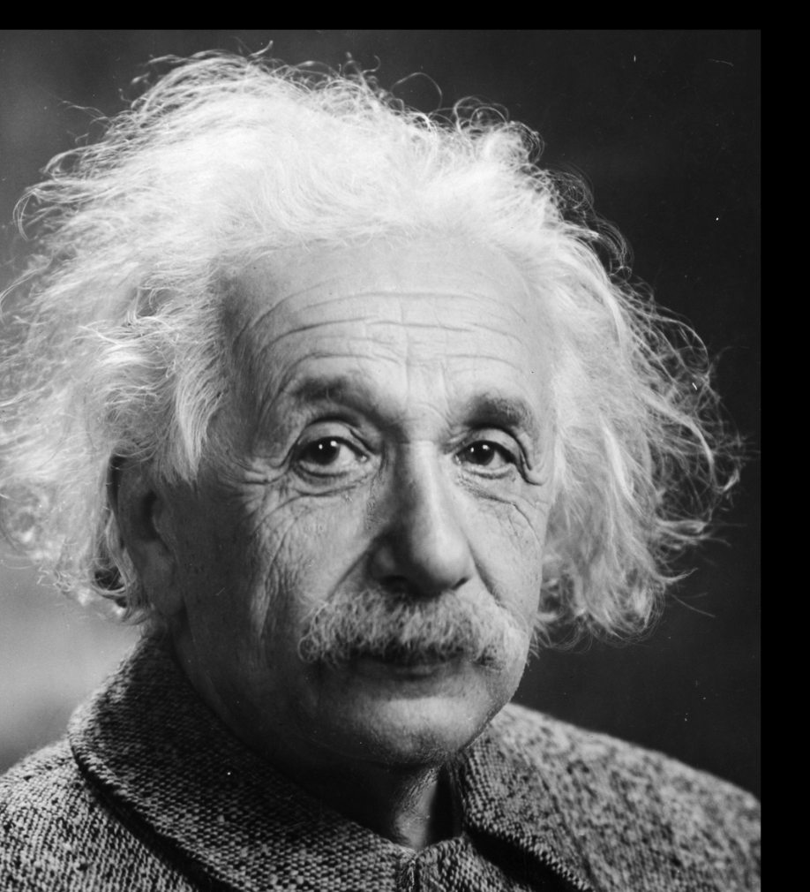
Hautes fréq. — Einstein
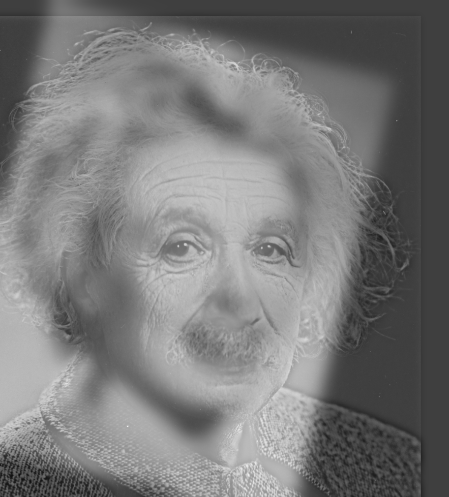
Image hybride (Deuxième version)
Résultat pour l'image hybride de Marilyn et Einstein avec les valeurs de σ les plus optimales que j'ai pu trouver. On peut bien voir les éléments distinctifs
d'Einstein comme ses rides et sa moustache de proche, mais lorsque l'on s'éloigne, Einstein disparait pour laisser place à Marilyn.
Après plusieurs expérimentation, j'ai trouvé que des sigma de 20 et 10 donnaient le meilleur résultat possible, mais après avoir complété les piles gaussienne et laplacienne, j'ai remarqué d'un sigma de 16 donnait le meilleur flou pour
l'image à basse fréquence et qu'un sigma de 8 faisait resortir le plus de détails de l'image à haute fréquence.
Figure 1. Paire Einstein / Marilyn. De près : Einstein De loin : Marilyn
§ 3 Paire personnelle — Lion / Chat
Paramètres retenus
σ_bas (Lion)6
σ_haut (Chat)4
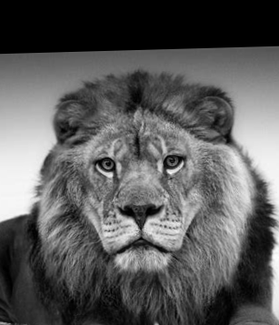
Basses fréq. — Lion
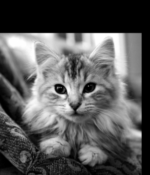
Hautes fréq. — Chat
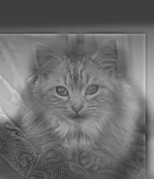
Image hybride
Résultat pour l'image hybride avec les images personnelle avec des sigmas de 6 et 4 trouvés après plusireurs essaies. Je suis allé avec une image de chat et de lion sans aucune raison particulière.
Comme pour Einstein/Marilyn, on peut bien voir les éléments du chat comme ses yeux et ses oreilles de proche alors que le lion est seulement de loin.
Figure 3. Analyse fréquentielle Einstein/Marilyn. Le spectre hybride combine un pic central (Marilyn) et un anneau (Einstein), occupant des bandes disjointes.
§ 5 Partie 2 - Piles gaussiennes et laplaciennes
5.1 Piles sur « Lincoln et Gala » de Dalí
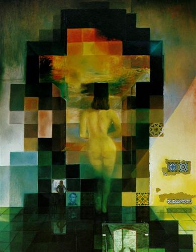
Image originale — Lincoln et Gala (Dalí)
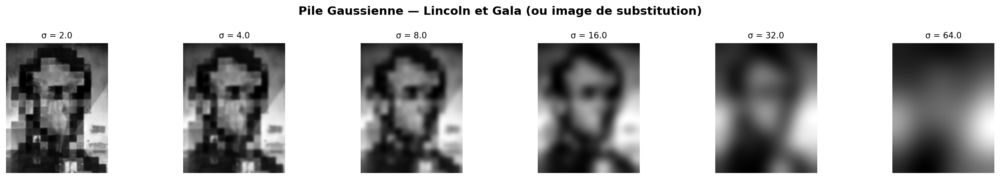
Pile Gaussienne
σ = 2, 4, 8, 16, 32, 64
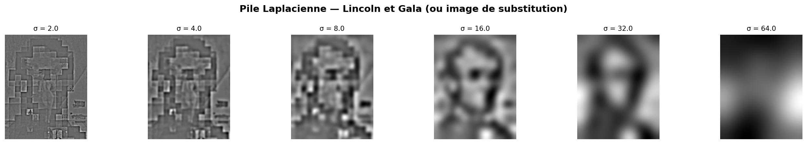
Pile Laplacienne
Détails extraits par niveau
Figure 4. Piles gaussienne et laplacienne sur « Lincoln et Gala » de Dalí.
Pile Gaussienne : L'image devient de plus en plus floue plus on augmente le sigma. On peut voir qu'à partir de 16, les détails de la femme ont complètement disparu et on ne voit seulement Lincoln.
Pile Laplacienne : Cette pile représente les détails perdus entre chaque niveau de la pile gaussienne, on peut remarqué que les détails de l'image augmente progressivement
à chaque niveau de la pile jusqu'au niveau de sigma=8. Après ce niveau, l'image devient de seulement plus floue. Cela est du au fait que la pile se base sur les images déjà floues
de la gaussienne.
5.2 Piles sur l'image hybride Marilyn/Einstein
Image originale (Première version) — Hybride Marilyn / Einstein
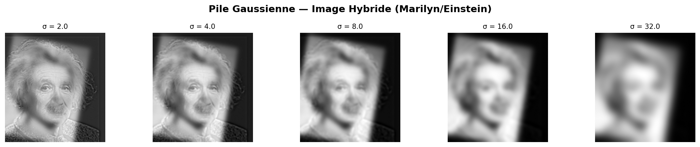
Pile Gaussienne — Hybride
σ = 2, 4, 8, 16, 32
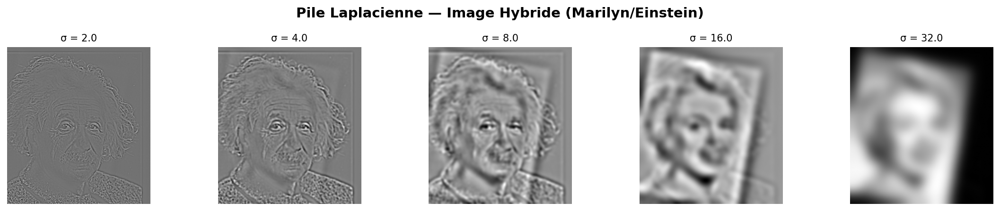
Pile Laplacienne — Hybride
Séparation fréquentielle visible
Figure 5. Piles gaussienne et laplacienne de l'image hybride Marilyn/Einstein.
Pile gaussienne : Cette pile utilise la première version de l'image hybribe ayant des sigmas de 20/10. Comme pour le cas de l'image de lincoln, lorque qu'on floue l'image
Einstein disparait jusqu'à ce que seulement Marilyn soit visible. Comme mentionné dans la partie 1, la pile résultante m'a fait réaliser q'un sigma de 16 sur les base fréquences aura un meilleur
impact sur la visibilité de Marilyn.
Pile laplacienne : Utilise aussi la première version de l'image hybribe ayant des sigmas de 20/10. Similairement, cette pile m'a fait réaliser q'un sigma de 8
sur les hautes fréquences aura un meilleur impact sur la visibilité d'Einstein lorsque vue de proche.
§ 6
Partie 3 — Mélange par piles laplaciennes
6.1 La « pommange »
La pommange est obtenue en fusionnant une pomme (moitié gauche) et une orange (moitié
droite) via un masque binaire vertical lissé par une pile gaussienne.
Image A — Pomme
Image B — Orange
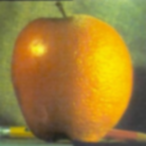
Résultat — Pommange
Figure 6. Mélange pomme / orange par piles laplaciennes avec masque vertical.
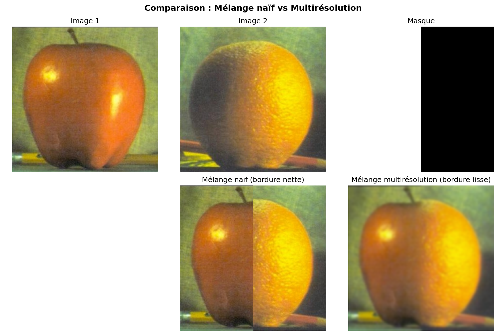
Comparaison des niveaux
Contribution de chaque pile à la fusion
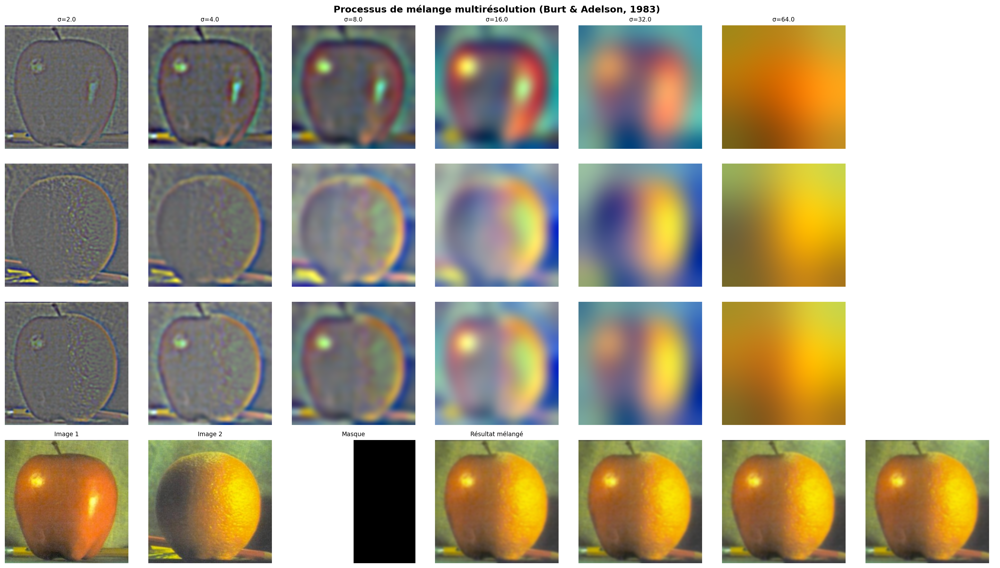
Illustration du procédé
Piles laplaciennes et masque à chaque niveau
Figure 7. Décomposition détaillée du mélange pomme/orange.
6.2 Mélange avec masque irrégulier — Phare / Océan
Pour illustrer la puissance des masques irréguliers, une photographie de phare et une photographie d'océan ont été fusionnées à l'aide d'un masque non-linéaire épousant la ligne d'horizon et la silhouette du phare.
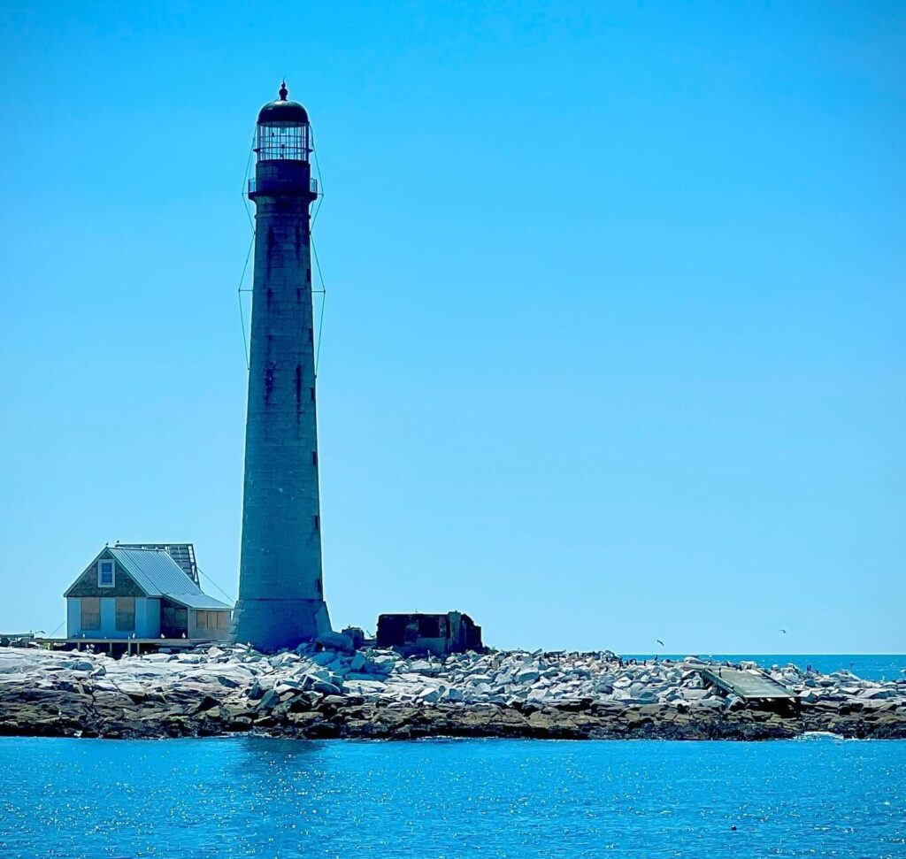
Image A — Phare
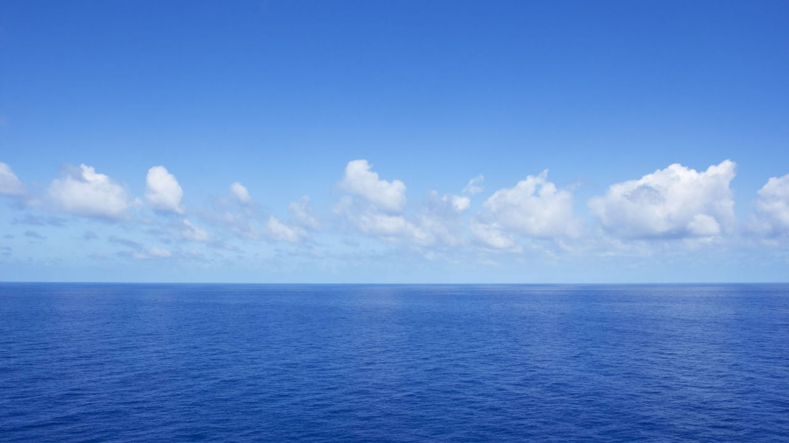
Image B — Océan
Résultat — Phare / Océan
Masque irrégulier lissé
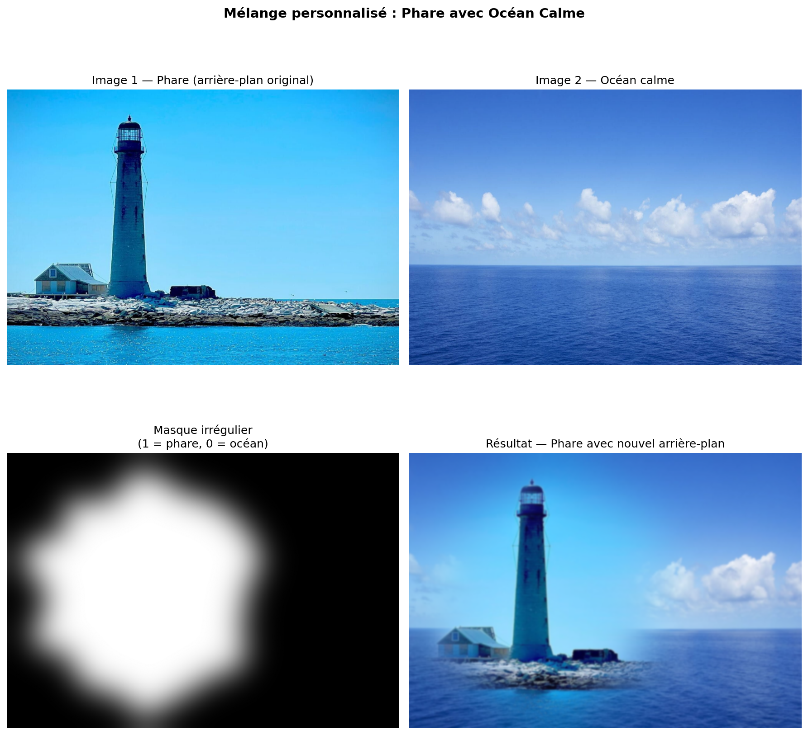
Comparaison des niveaux
Décomposition multi-échelle
Figure 8. Mélange phare / océan avec masque irrégulier.
6.3 Illustration détaillée du procédé
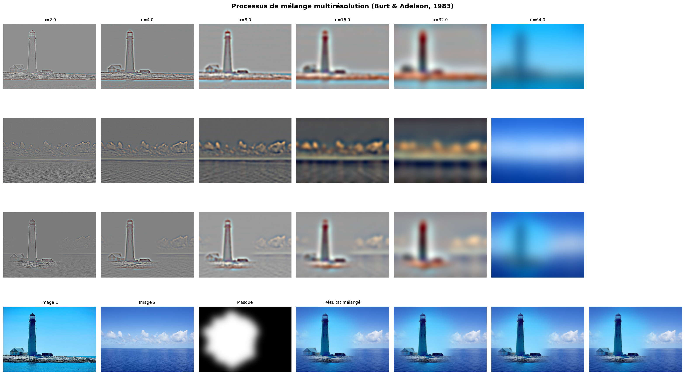
Procédé complet — Phare / Océan
Piles laplaciennes A et B · Pile gaussienne du masque · Reconstruction
Figure 9. Illustration détaillée du procédé de mélange pour la paire phare/océan.
L'algorithme réussi avec succès de faire le phare à sur l'image de l'océan. L'image résultant reste tout de même irréaliste et il est évident que le phare
a été ajouté digitalement. Le ciel et l'eau des deux images originales sont d'un bleu très différent et les nuages sont coupés. J'aurais dû choisir de meilleur image ou bien
amélioré mon masque irrégulier afin que l'image résultante soit plus réaliste.
§ 7 Utilisation de l'IA
L'IA a été utilisé pour générer ce rapport. Le modèle utilisé était CLaudeAI. Tout le format visuel dont les titres des sections ainsi que les descriptions d'images ont été
généré par l'intéligence artificielle. Cependant, les explications des processus et des résultats n'ont pas été généré, mais plutôt écrit manuellement.
§ 8 Références
Oliva, A., Torralba, A., & Schyns, P. G. (2006). Hybrid images. ACM Transactions on Graphics (SIGGRAPH), 25(3), 527–532.
Burt, P. J., & Adelson, E. H. (1983). A multiresolution spline with application to image mosaics. ACM Transactions on Graphics, 2(4), 217–236.
Gonzalez, R. C., & Woods, R. E. (2018). Digital Image Processing (4th ed.). Pearson.